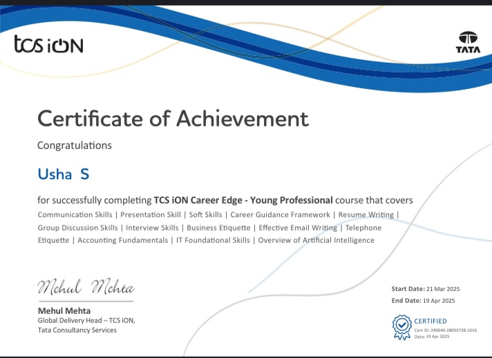
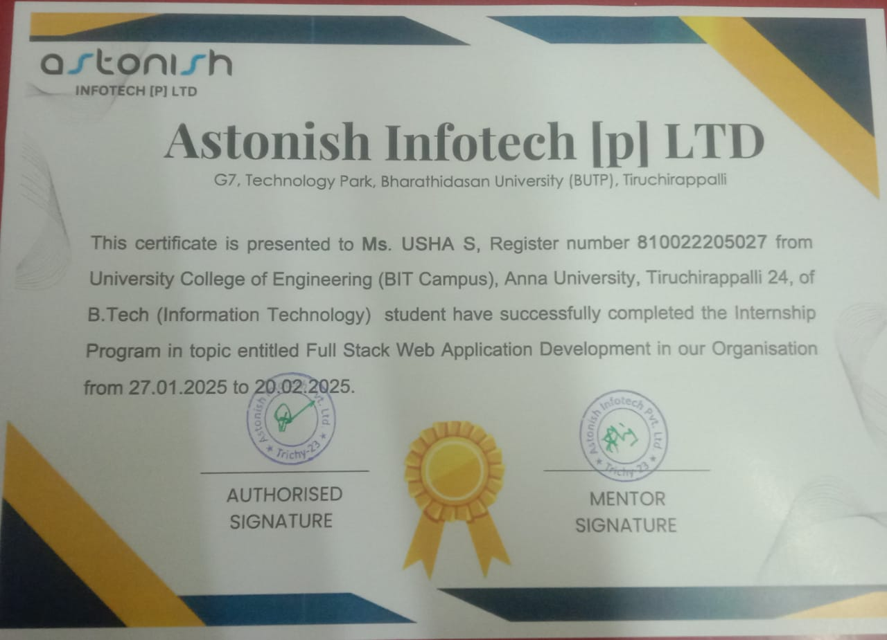

Certifications
Introduction to python

Certificate Earned I’m happy to share that I’ve successfully completed the Introduction to HTML course from Sololearn! This course helped me build a solid foundation in HTML, covering essential concepts for web development including elements, tags, attributes, and structure.
TCS
Certificate Earned Certificate Earned I’m excited to share that I’ve successfully completed the TCS iON Career Edge – Young Professional program by Tata Consultancy Services (TCS). This course enhanced my employability skills through modules like: ✅ Communication & Presentation Skills ✅ Resume & Email Writing ✅ Interview & Group Discussion Skills ✅ Business Etiquette, IT Fundamentals, and AI Overview Grateful for this opportunity to grow professionally and be better prepared for the workplace! 🌟.
Internship
Certificate Earned I’ve successfully completed the internship in Full stack -web development